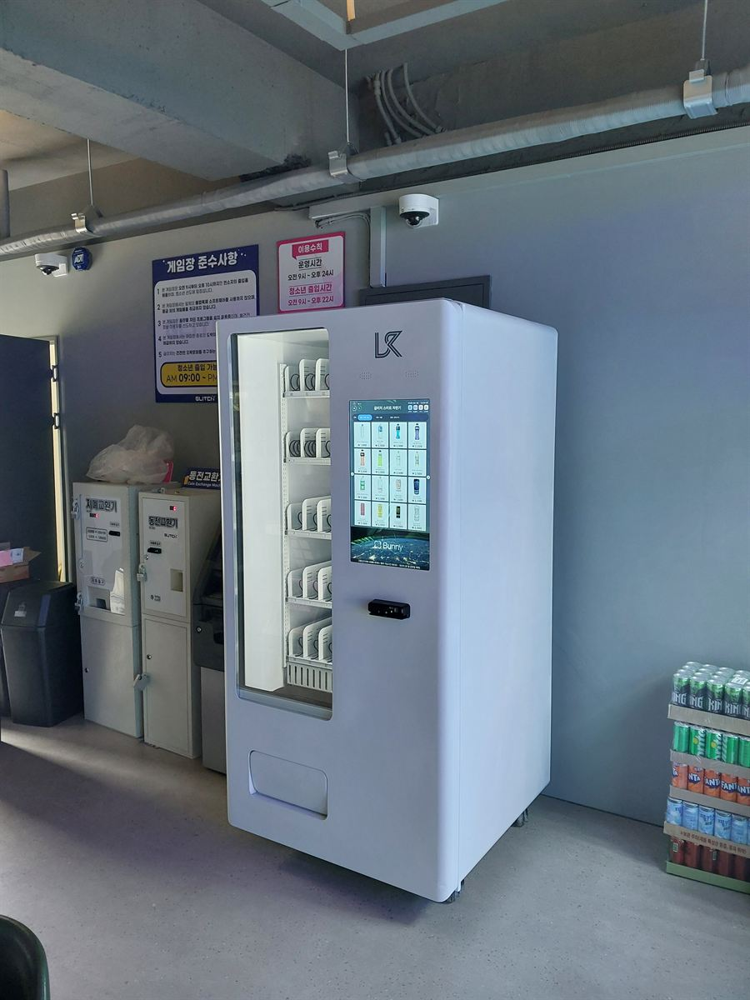
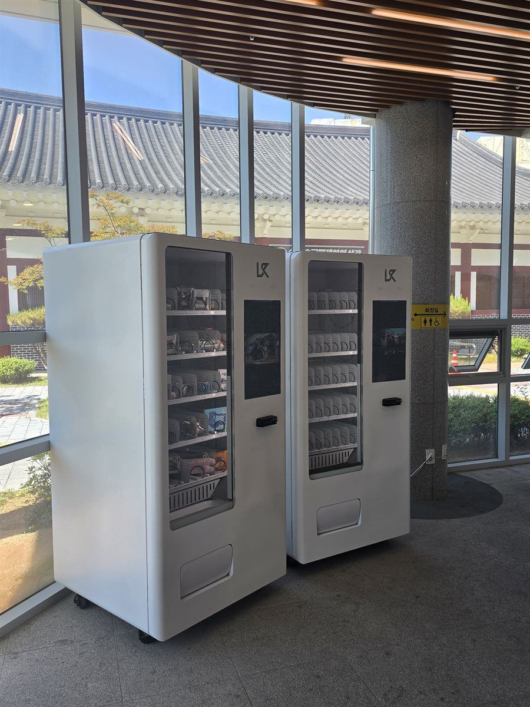
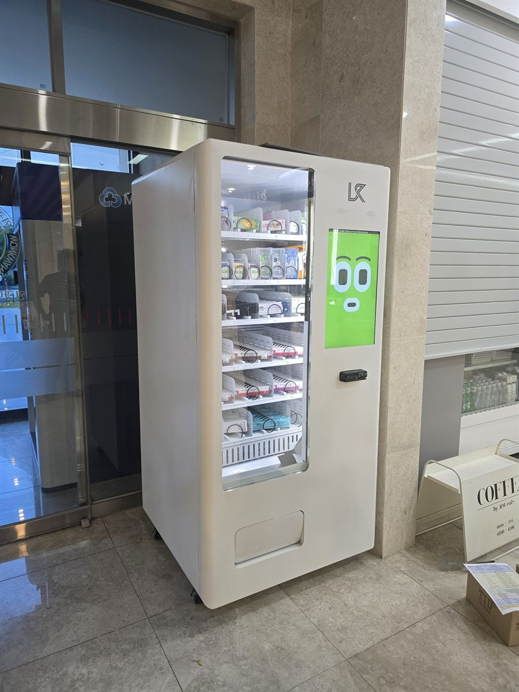
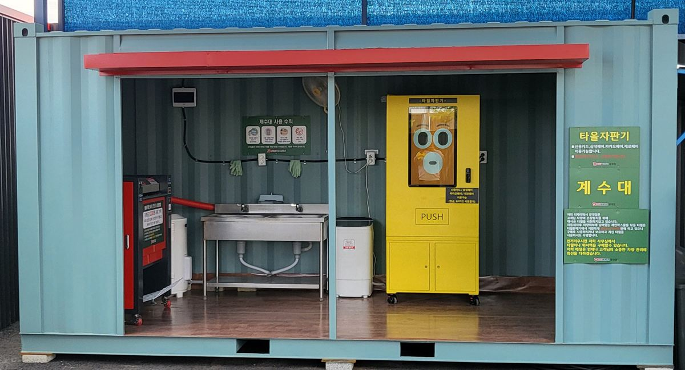
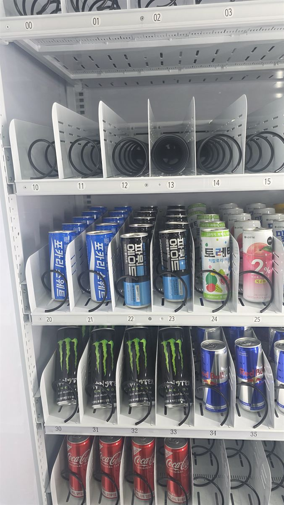

설치 후기
H포스가 직접 설치한 전국 카드단말기·포스기·키오스크·무인자판기 현장 기록입니다. (전체 265건 · 1/27 페이지)

창원 무인자판기 설치 완료 — 게임장 동전교환기 옆 음료 자판기
게임장 손님이 반드시 한 번 서는 동전교환기 옆 빈 벽에 냉장 음료 자판기 한 대를 세웠습니다. 칸별 재고를 앱으로 보고 카드·간편결제만 받아, 사람을 더 쓰지 않고 음료 매출만 더하는 구성입니다.

울산 중구 무인자판기 설치 완료 — 문화시설 로비 기념품 자판기 두 대
직원이 상주하지 않는 로비에 기념품용·생활용품용 자판기를 한 대씩 나눠 세웠습니다. 칸 재고는 앱으로 보고, 카드·간편결제만 받아 현금 관리가 없습니다.

인천 부평구 무인자판기 설치 완료 — 병원 로비 위생용품 자판기 한 대
접수 창구에서 칫솔 하나, 마스크 한 장씩 팔던 일을 자판기 한 대로 떼어 냈습니다. 로비 기둥 옆 자투리 자리에 세우고, 칸별 재고는 데스크에서 앱으로 확인합니다.

광주 북구 무인자판기 설치 완료 — 셀프세차장 타월 자판기 한 대
타월 하나 사려고 손님이 사무실 문을 두드리던 자리를 자판기 한 대로 정리했습니다. 계수대 옆 부스 안에 두어 비와 햇볕을 피하고, 칸별 재고는 앱에서 확인합니다.

유성구 무인자판기 설치 완료 — 24시간 무인 헬스장 이온음료 한 대
카운터에 사람이 없는 24시간 무인 헬스장에 냉장 자판기 한 대를 들였습니다. 운동 전에 사는 에너지드링크와 운동 직후에 사는 이온음료를 줄로 나눠 배치하고, 습기와 매트를 피해 락커룸 통로에 자리를 잡은 과정입니다.

연제구 무인자판기 설치 완료 — 실내 키즈 놀이시설 생수·음료 한 대
아이가 노는 동안 보호자는 앉아서 기다리는 실내 놀이시설에 냉장 자판기 한 대를 놓았습니다. 아이가 고르는 칸과 어른이 사는 칸을 높이로 나누고, 매트 바닥과 통유리를 피해 자리를 잡은 과정입니다.

원주 무인자판기 설치 완료 — 무인 탁구장 음료·이온음료 한 대
직원이 상주하지 않는 무인 탁구장에 냉장 자판기 한 대를 놓았습니다. 운동 직후 찾는 생수·이온음료를 맨 위에 두고, 앱으로 재고와 매출을 원격 확인하는 구성입니다.

제주 무인자판기 설치 완료 — 피부관리실 로비 화장품 자판기
먹는 것이 아닌 자판기, 화장품과 마스크팩을 파는 한 대를 피부관리실 안내데스크 옆에 세웠습니다. 음료용과 다른 칸 설계, 팔릴 품목 고르는 법, 앱 원격 재고 확인까지 정리했습니다.

충주 무인자판기 설치 완료 — 무인 라면 코너 옆 냉장형 한 대
라면 조리 자판기만 있는 자리에서는 마실 것이 없어 손님이 그냥 나갑니다. 유리문 냉장형 한 대를 옆에 붙여 컵라면·음료·컵커피를 층으로 나눠 담고, 앱으로 내부 온도와 칸별 재고를 원격으로 확인합니다.

금천구 무인자판기 설치 완료 — 지식산업센터 휴게실에 과자·음료 한 대
칸 50개를 위는 과자, 아래는 음료로 나눠 담아 한 대로 매점 역할을 하게 구성했습니다. 앱으로 칸 번호별 재고를 보고, 카드·간편결제만 받아 동전 관리가 없습니다.